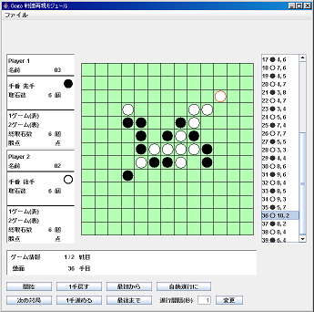

戦譜再現モジュールの操作方法
■ 戦譜再現モジュールの機能
- 戦譜ファイルを指定して読み込む
- 戦譜に従って、一手ごとに対戦を再現できる
- 対戦の進行は、自動モードと逐次モードがある
- 任意の手数にジャンプしたり、逆行することもできる
- 再現中の局面を、初期局面として保存することができる
■ 戦譜再現モジュールの使用法

● 戦譜再現モジュールの起動方法
- Gogoシステムのルートにある replay.bat を実行する。
● 戦譜再現モジュールの操作方法
◎ 戦譜読込
- メニューの「ファイル」から「戦譜読込」を選択する。
- ファイル選択ダイアログから、戦譜ファイルを読み込む。
◎ 対戦再現
○ 再現開始
- 左下の「開始」ボタンを押すことで、対戦の再現を開始する。
○ 進行切替
- 「自動進行に/手動進行に」ボタンを押すと、
再現の進行方法を切り替えることができる。
- 手動進行では、「1手進める/1手戻す」ボタンで手数を進める。
- 自動進行では、一定の時間間隔で手数を進行する。
- 自動進行における進行時間間隔は、フォームに時間を入力し、
「変更」ボタンを押すことで変更できる。
- 「最後まで」ボタンを押すと、対戦が終了した状態まで一気に進めることができる
- 「最初から」ボタンを押すと、1手目まで戻すことができる。
○ 手数指定
- 盤面右側の着手リストから、任意の手数を選択すると、その時の局面を表示する。
○ 対局選択
- 「次の対局/前の対局」ボタンを押すと、対局を切り替えることができる。
◎ 局面保存
- 現在表示中の局面を初期局面として保存できる。
- メニューの「ファイル」から「局面保存」を選択し、
ファイル保存ダイアログで、名前を付けて保存する。
- 保存した局面を対戦実行モジュールの
初期状態として設定すると、続きから対戦を始めることができる。